Lectures in this section
Each lecture links to the notes that cover it. EBS and EFS complement the object-storage patterns in Section 7.
- Amazon EBS — block storage for EC2 ~10:00 Slides 186–192
- Amazon EFS — elastic shared file storage ~8:00 Slides 193–198
- AWS Backup — plans, vaults and Vault Lock ~7:00 Slides 199–202
- Choosing block, file, object or scratch storage ~5:00
Amazon EBS — Elastic Block Store
Amazon Elastic Block Store (EBS) provides scalable, durable block-level storage attached to a single EC2 instance. It behaves like a virtual hard drive: you format it with a filesystem and mount it at a path such as /dev/xvdf. EBS is the default choice when an application needs low-latency random I/O on one machine — databases, boot volumes, and ETL staging on EC2.
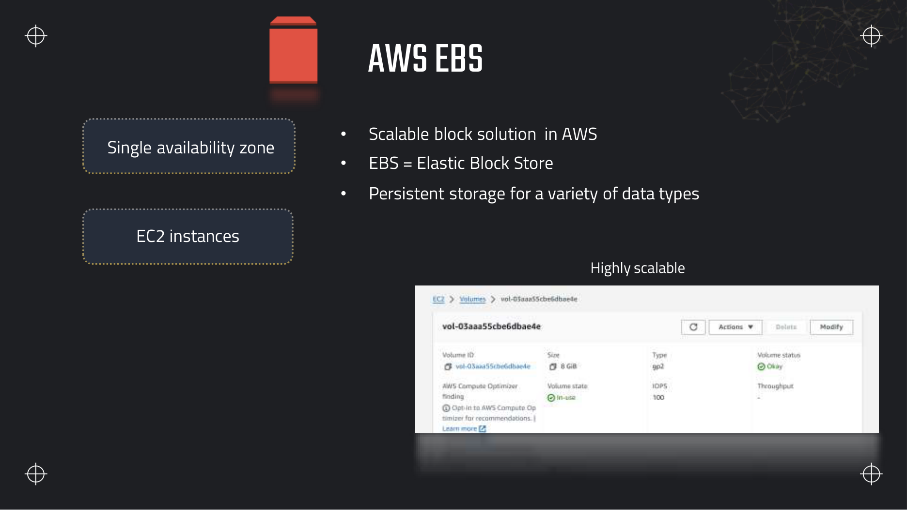
Key features
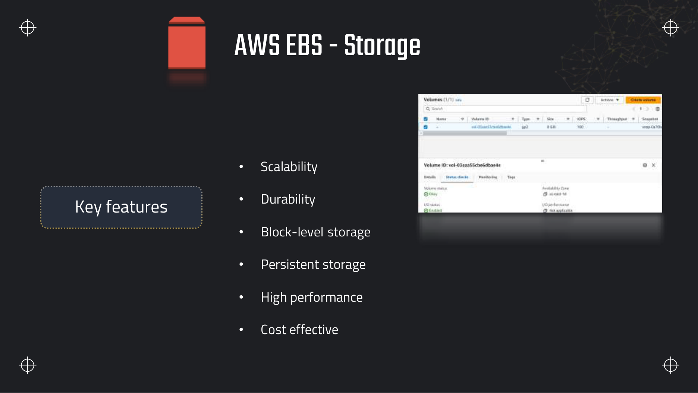
- Scalability — resize volumes online (with a filesystem grow step on the instance).
- Durability — data is replicated within the AZ; snapshots add cross-AZ and cross-Region portability.
- Block-level — raw blocks, not files or objects; the OS sees a disk device.
- Persistent — survives instance stop/start; survives instance termination only if delete on termination is disabled.
- Encryption — all new EBS volumes are encrypted by default using AWS KMS (or the account default key).
How EBS attaches to EC2
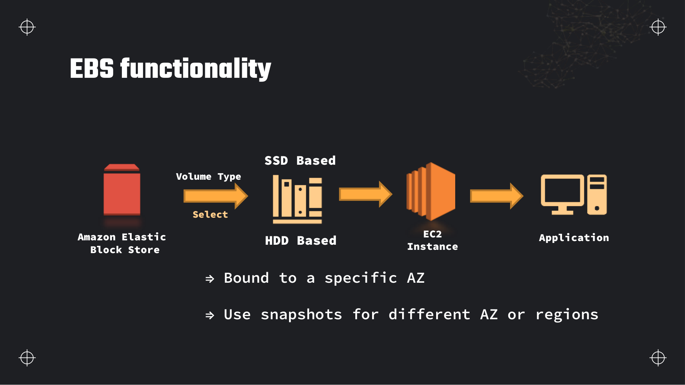
EBS volume types
The deck names GP2/GP3, IO1/IO2, ST1 and SC1. The table below is what the exam actually tests — IOPS/throughput ceilings, size ranges, and the workload each type targets.
| Type | Media | Max IOPS | Max throughput | Size range | Use case |
|---|---|---|---|---|---|
| gp3 | SSD | 16,000 | 1,000 MB/s | 1 GB – 16 TB | General purpose — boot volumes, dev, most databases. Baseline 3,000 IOPS and 125 MB/s regardless of size; scale IOPS/throughput independently. |
| gp2 | SSD | 16,000 | 250 MB/s | 1 GB – 16 TB | Legacy general purpose; IOPS scale with volume size (3 IOPS/GB, burst to 3,000). Prefer gp3 for new workloads. |
| io2 Block Express | SSD | 256,000 | 4,000 MB/s | 4 GB – 64 TB | Mission-critical, sub-millisecond latency, 99.999% durability SLA. |
| io1 / io2 | SSD | 64,000 (io1) / 256,000 (io2) | 1,000 MB/s | 4 GB – 16 TB | Provisioned IOPS for sustained random I/O — OLTP databases, latency-sensitive apps. Supports Multi-Attach on Nitro instances. |
| st1 | HDD | 500 | 500 MB/s | 125 GB – 16 TB | Throughput-optimised — big data, log processing, sequential reads/writes. Cannot be a boot volume. |
| sc1 | HDD | 250 | 250 MB/s | 125 GB – 16 TB | Cold HDD — lowest cost, infrequent access, sequential patterns only. |
EBS Multi-Attach
io1 and io2 volumes on Nitro-based instances can attach to up to 16 EC2 instances in the same AZ simultaneously. Every attached instance must use a cluster-aware filesystem (such as GFS or OCFS2) — a standard ext4 or XFS mount on two instances will corrupt data. Multi-Attach is rare in data-engineering pipelines but appears as a distractor against EFS.
EBS snapshots
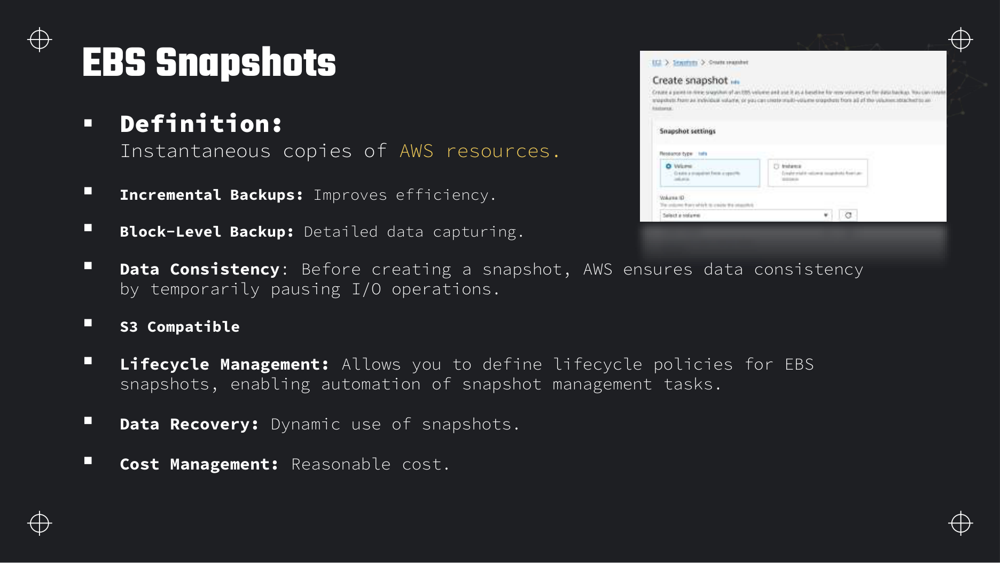
- Incremental — the first snapshot is a full copy; subsequent snapshots store only deltas.
- Crash-consistent by default — for a database, quiesce I/O or use VSS/agent for application-consistent snapshots.
- Cross-AZ and cross-Region — copy a snapshot to another Region for DR; create a new volume in any AZ from a snapshot.
- EBS Snapshot Archive — move infrequently accessed snapshots to a lower-cost archive tier (minimum 90-day retention).
- Fast Snapshot Restore (FSR) — pre-warm a snapshot in an AZ so the first volume created from it is immediately at full performance (costs per snapshot-AZ-hour).
- Lifecycle policies — automate snapshot creation and expiration via Data Lifecycle Manager or AWS Backup.
Modifying volume size and performance
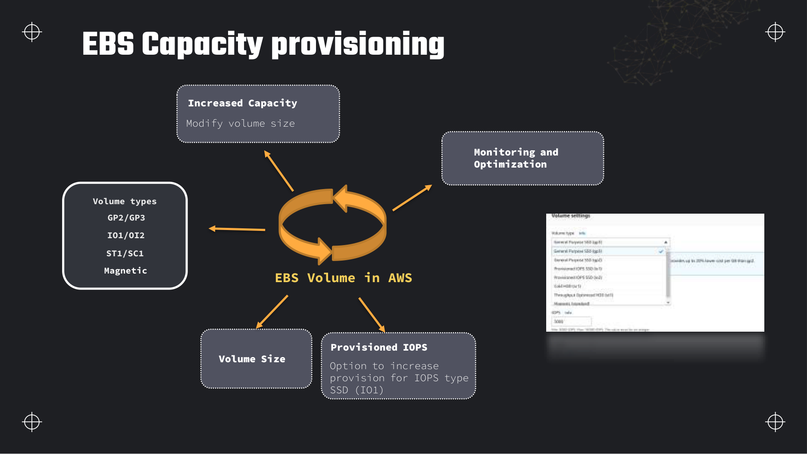
Delete on termination
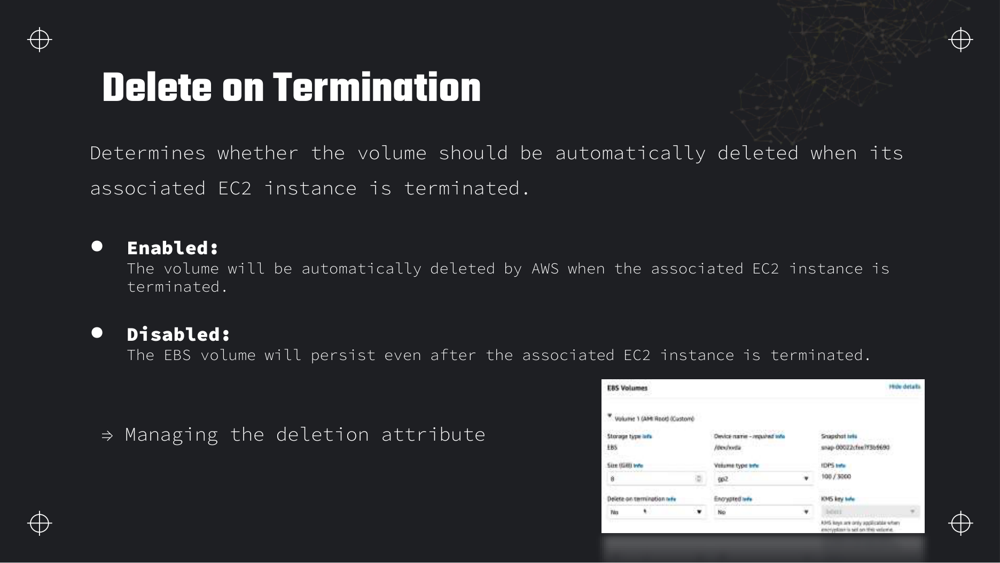
Amazon EFS — Elastic File System
Amazon Elastic File System (EFS) is a serverless, fully elastic shared file system using the NFSv4.1 protocol. Many EC2 instances (and other compute such as Lambda or ECS) mount the same filesystem concurrently across multiple Availability Zones in a Region. You pay for storage used and do not pre-provision capacity.
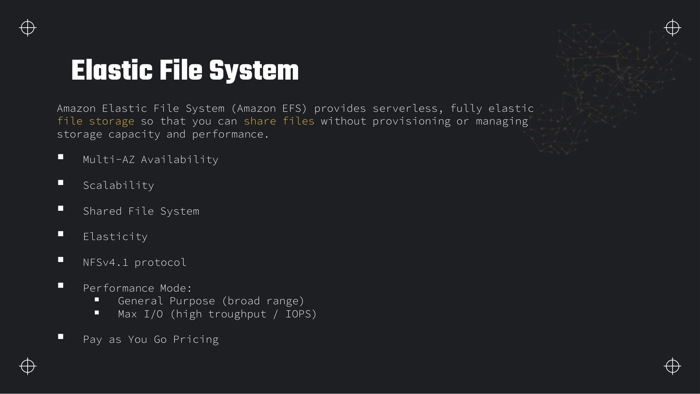
POSIX API
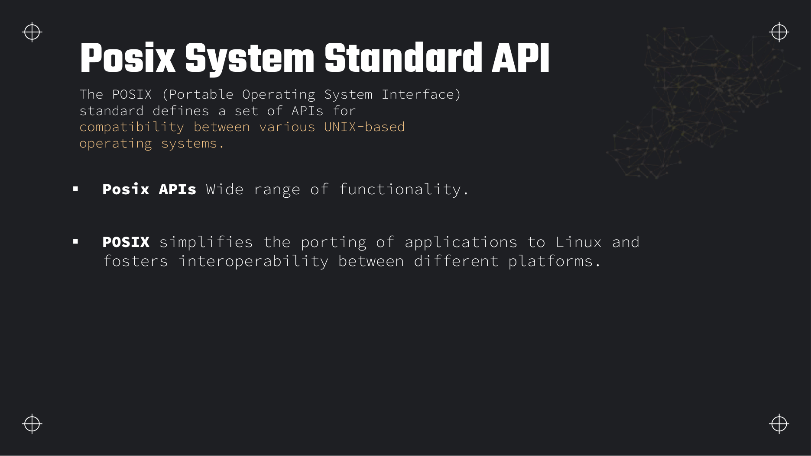
open, read, write, file locking, directory hierarchies — work without application changes. This is why lift-and-shift web and CMS workloads land on EFS.Performance and storage classes
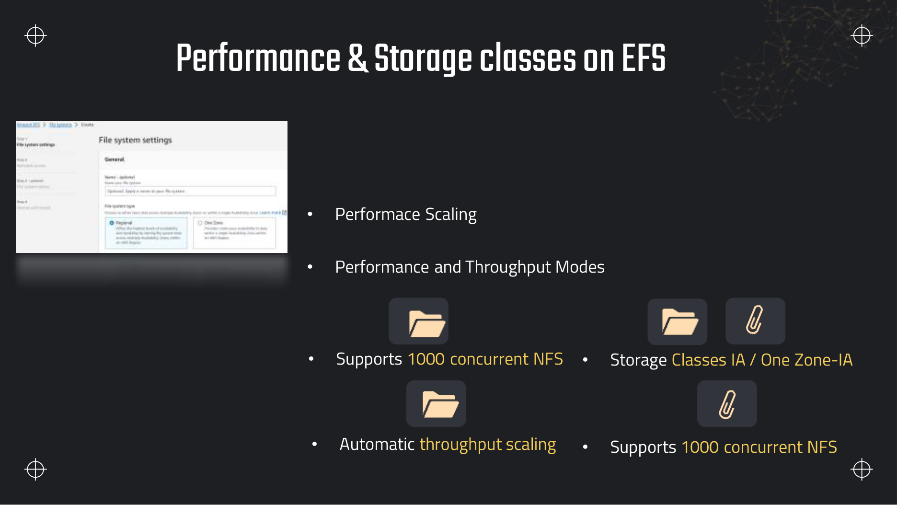
- Standard — replicated across multiple AZs; default for production.
- EFS Infrequent Access (IA) — lower storage cost for files accessed less often; pay a retrieval fee on access.
- EFS Archive — lowest storage cost for rarely accessed files; higher retrieval cost.
- EFS One Zone — data in one AZ only; pair with AWS Backup for DR. One Zone-IA adds the IA pricing model.
- Lifecycle management — transition files automatically between Standard → IA → Archive based on last-access time.
Performance Mode — General Purpose vs Max I/O
| Feature | General Purpose | Max I/O |
|---|---|---|
| Latency | Low — default for most workloads | Lower per-operation latency at scale |
| Throughput / IOPS | Good for mixed read/write; auto-scales with data stored | Highest aggregate throughput and IOPS |
| Ideal workloads | Web serving, CMS, dev/test, home directories | Big data analytics, media processing, database scratch |
| Scaling | Automatic with stored data | Does not auto-scale; tune throughput mode separately |
Throughput Mode — Bursting, Provisioned and Elastic
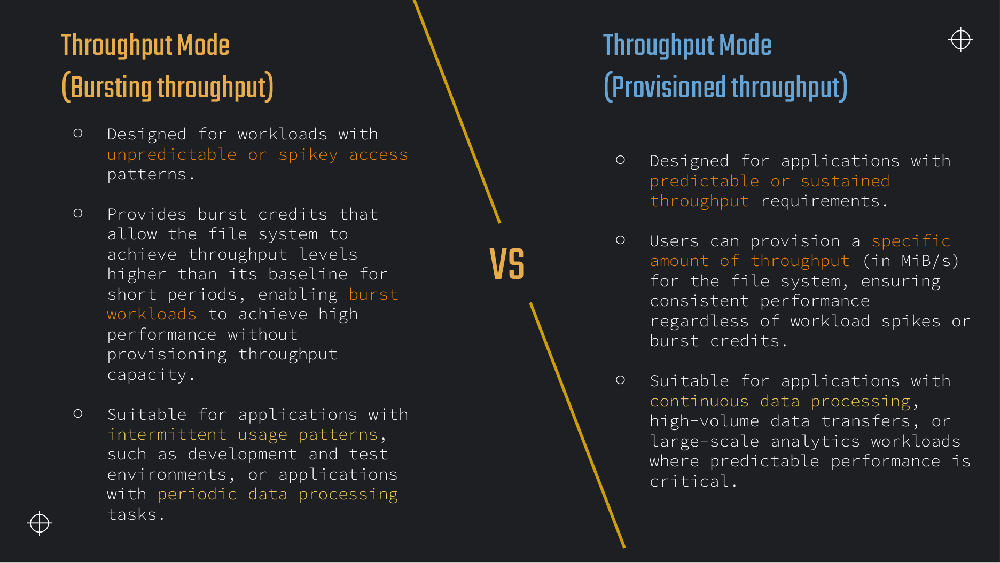
| Mode | How it works | When to choose |
|---|---|---|
| Bursting (default) | Baseline throughput scales with filesystem size; burst credits allow short spikes above baseline | Dev/test, periodic batch jobs, unpredictable but moderate traffic |
| Provisioned | You set throughput in MiB/s independent of storage size | Sustained high throughput — continuous ETL, large-scale analytics, media pipelines |
| Elastic | Automatically scales throughput up and down with workload | Unpredictable workloads that exceed bursting baseline for extended periods; no manual capacity planning |
Where FSx fits
The deck stops at EFS, but the exam occasionally offers Amazon FSx as an option. FSx is a family of managed filesystems for specific protocols and performance profiles:
- FSx for Lustre — high-throughput parallel filesystem for HPC and ML. Tight S3 integration: lazy-load from S3 or sync datasets. Choose this when the question mentions "scratch space for large-scale batch analytics reading from S3" or "sub-millisecond latency at hundreds of GB/s".
- FSx for Windows File Server — SMB for Windows workloads.
- FSx for NetApp ONTAP / OpenZFS — enterprise NAS features, snapshots, replication.
For generic Linux shared storage across AZs, EFS is still the default answer. FSx for Lustre wins when throughput to compute clusters matters more than POSIX simplicity.
AWS Backup
AWS Backup is a fully managed, centralised backup service. Instead of configuring snapshots, RDS backups and EFS backups separately, you define backup plans once and assign AWS resources by tag or ID. AWS Backup orchestrates creation, retention, cross-Region copy and restore.
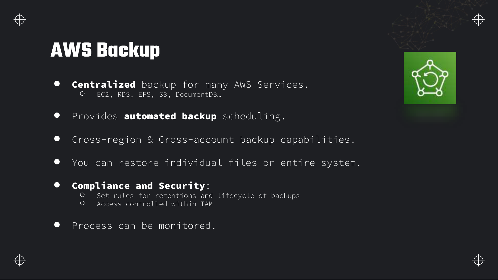
Supported services and backup plans
AWS Backup creates recovery points — immutable snapshots of the protected resource at a point in time. A backup plan defines:
- Rules — frequency (cron schedule), start window, completion window.
- Lifecycle — transition recovery points to cold storage (where supported) and expire them after N days.
- Cross-Region copy — replicate recovery points to a DR Region automatically.
- Cross-account copy — copy to a vault in a security/audit account for isolation.
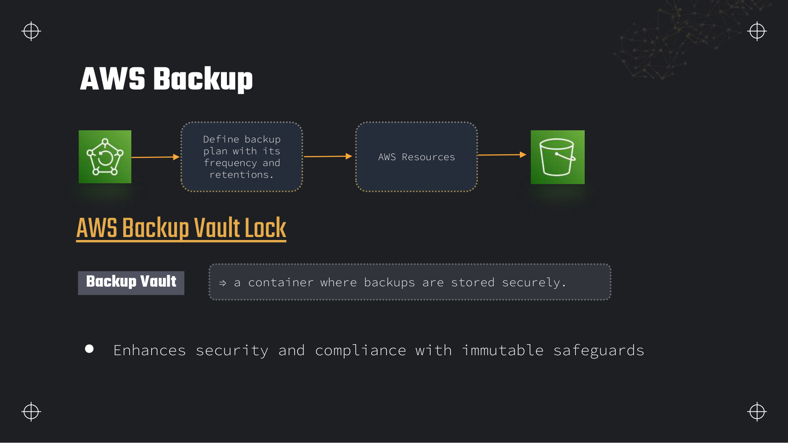
Backup=daily — so new EBS volumes inherit policy automatically.Backup Vault Lock
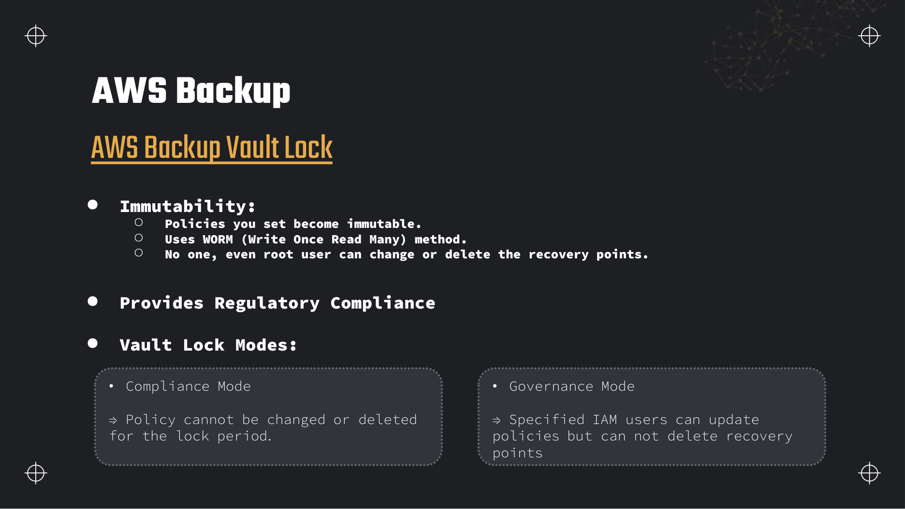
| Mode | Who can change the policy | Can recovery points be deleted early? | Typical use |
|---|---|---|---|
| Governance | Specified IAM principals can edit the vault lock policy | No — recovery points remain immutable; policy can be loosened by authorised admins | Internal governance, ops teams that need flexibility |
| Compliance | Nobody — policy cannot be changed or deleted for the lock period | No — not even root or AWS support can shorten retention | Regulated industries (finance, healthcare) with strict audit requirements |
Backup Audit Manager
AWS Backup Audit Manager (not on the deck) provides prebuilt and custom compliance frameworks that continuously evaluate backup activity against rules — for example, "all production RDS instances must have daily backups retained 35 days". It generates audit reports for SOC, PCI and HIPAA evidence. Pair it with Vault Lock when the exam question mentions regulatory compliance and provable immutability.
Choosing block, file, object or scratch storage
The exam presents five storage layers. Use this table before you pick an answer.
Three access models on AWS — one instance, many instances, any client
| Store | Access protocol | Scope | Who can mount / access | Durability | Data-engineering use case |
|---|---|---|---|---|---|
| S3 | Object (HTTP REST/API) | Region (bucket global name) | Any AWS service or client with IAM | 11 nines; versioning + replication | Data lake landing zone, curated Parquet, Athena/Glue source — see Section 7 |
| EBS | Block (disk device) | Single AZ | One EC2 instance (Multi-Attach: up to 16 in same AZ on io1/io2) | Replicated within AZ; snapshot for cross-AZ | EC2 database disk, staging before upload to S3, boot volumes |
| EFS | File (NFSv4.1) | Region (multi-AZ) | Many EC2, ECS, Lambda in VPC | Multi-AZ redundant (Standard); One Zone trades redundancy for cost | Shared input/output directory for a fleet of Glue-adjacent EC2 workers |
| FSx for Lustre | File (POSIX, parallel) | Single AZ (usually) | EC2 cluster, EKS | Durable backend; cache/scratch semantics | HPC/ML scratch, high-throughput reads from S3-backed datasets |
| Instance store | Block (local NVMe/SSD) | Single instance | One EC2 only | Ephemeral — lost on stop (depending on type) or terminate | Spark shuffle, temporary sort spill — never the sole copy of curated data |
Deeper detail and exam edge cases
Volume-type ceilings, snapshot billing mechanics, EFS throughput credits, and Backup vault economics — the block and file storage details EC2-attached pipelines hit after the lab instance terminates.
Limits and quotas that decide answers
| Limit | Value | Adjustable? | Why it matters |
|---|---|---|---|
| gp3 baseline IOPS / throughput | 3,000 IOPS and 125 MB/s on any size volume | Yes — provision up to 16,000 IOPS and 1,000 MB/s independently of size | Unlike gp2, small volumes are not IOPS-starved — exam favours gp3 for new workloads. |
| gp2 IOPS formula | 3 IOPS per GB; burst to 3,000 with burst credits on volumes < 1 TB | Partially — grow volume or switch to gp3 | 100 GB gp2 = 300 baseline IOPS; burst credits exhaust under sustained load. |
| io1 / io2 IOPS ratio | Up to 50:1 IOPS to GB (io1); io2 up to 500:1 on smaller sizes | Yes — provisioned IOPS billed whether used or not | Over-provisioned IOPS is a common database cost leak. |
| io2 Block Express | Up to 256,000 IOPS and 4,000 MB/s; 4 GB – 64 TB | Yes — Nitro instances only | Mission-critical OLTP; not bootable on non-Nitro instance families. |
| st1 / sc1 boot volume | Cannot be root/boot volumes | No (hard) | Exam distractor: st1 for OS disk is invalid. |
| EBS volume AZ scope | Single Availability Zone | No (hard) — snapshot + restore to move | Cross-AZ attachment fails; DR requires snapshot copy. |
| Multi-Attach | Up to 16 instances on io1/io2 in same AZ; cluster filesystem required | N/A — feature of volume type | Standard ext4 on two instances corrupts data — EFS is the shared-file answer. |
| EBS encryption | Enabled by default on new volumes; cannot disable encryption on a volume once enabled | No (hard) for decrypting existing encrypted volume | Snapshot of encrypted volume is encrypted; copy unencrypted only via instance-side copy. |
| EFS Performance mode | General Purpose vs Max I/O — chosen at creation | No (hard) — cannot change after create | Wrong mode requires new filesystem and migration. |
| EFS Throughput mode | Bursting (default), Provisioned, or Elastic | Yes — can change throughput mode | Bursting baseline scales with stored GiB; credits exhaust on sustained spikes. |
| EFS IA access charge | Per GB read from Infrequent Access storage class | N/A — pricing model | Frequently read IA files cost more than Standard — lifecycle policy must match access. |
| EFS protocol scope | NFSv4.1 — Linux only | No (hard) | Windows SMB → FSx for Windows; HPC parallel → FSx for Lustre. |
| AWS Backup cold storage minimum | 90 days minimum retention when transitioning recovery points to cold storage | No (hard) for cold tier rule | Shorter retention must stay on warm tier. |
| Vault Lock Compliance | Policy immutable for lock period | No (hard) | Same WORM semantics as S3 Object Lock Compliance — test in Governance first. |
What you actually pay for
| Billed dimension | Unit | How to spend less |
|---|---|---|
| EBS gp3 storage | GB-month plus provisioned IOPS/throughput above baseline | Stay at 3,000 IOPS / 125 MB/s unless metrics prove need; delete unattached volumes. |
| EBS gp2 storage | GB-month; IOPS tied to size | Migrate to gp3 — smaller volumes get same baseline IOPS at lower cost. |
| Provisioned IOPS (io1/io2) | GB-month plus per-IOPS-month provisioned | Right-size IOPS to actual VolumeQueueLength; io2 Block Express only when SLA requires it. |
| EBS snapshots | GB-month incremental changed blocks in snapshot chain | Delete obsolete snapshots — deleting a snapshot merges data into later snapshots, no orphan blocks billed twice. |
| Snapshot Archive | Lower GB-month rate; 90-day minimum retention | Archive infrequently accessed snapshots; restore latency is hours. |
| Fast Snapshot Restore | Per snapshot-AZ-hour while enabled | Enable only during cutover windows; disable after volume created. |
| EFS Standard storage | GB-month | Lifecycle to IA after 30+ days no access; One Zone for non-critical dev. |
| EFS IA / Archive retrieval | Per GB accessed | Do not point hot ETL output at IA tier; use lifecycle only on cold prefixes. |
| EFS Provisioned / Elastic throughput | MiB/s-month regardless of burst credits | Switch to Elastic when sustained load exceeds bursting baseline; Provisioned when load is flat and predictable. |
| AWS Backup warm storage | GB-month for recovery points in vault | Match retention to RPO/RTO; expire stale recovery points with lifecycle. |
| AWS Backup cold storage | Lower GB-month after 90-day minimum warm period | Long-retention compliance backups only — restore from cold is slower. |
| Cross-Region backup copy | Backup storage in DR Region plus inter-Region data transfer per GB | Copy only tagged production resources; same-Region vault for non-DR workloads. |
| Cross-account backup copy | Storage in audit account vault plus transfer | Central vault in security account; source account pays copy API charges. |
available volumes with no attachments.Traps that catch people
- gp2 burst credit exhaustion — Volumes under 1 TB earn burst credits for 3,000 IOPS spikes. Sustained random I/O depletes credits and throughput collapses to baseline 3 IOPS/GB — migrate to gp3 or io2.
- Deleting snapshot does not lose data — Snapshots are incremental. Deleting an intermediate snapshot merges its blocks into the next snapshot; you only remove redundant billing, not recoverability, unless it was the only snapshot in the chain.
- EBS encryption is one-way — You cannot turn off encryption on a volume or share an encrypted snapshot unencrypted without copying data through an instance.
- EBS-optimised instances — Maximum EBS throughput depends on instance type (
EbsBandwidth/EbsThroughputlimits). Provisioning 1,000 MB/s on gp3 attached to a small instance wastes money — the instance caps delivery. - Multi-Attach without cluster FS — Two Linux instances mounting io2 with ext4 corrupts the filesystem. Exam answer for shared POSIX across AZs is EFS, not Multi-Attach.
- EFS bursting credit drain — Small filesystems have low baseline throughput. A one-time large parallel copy exhausts burst credits and throttles for hours — use Provisioned or Elastic throughput for migration spikes.
- EFS IA read penalty — Lifecycle moves cold files to IA storage class; reading them triggers per-GB access charges. Re-read weekly reports from IA cost more than keeping them in Standard.
- EFS vs FSx for Lustre — EFS is general NFS; Lustre links to S3 for HPC scratch at hundreds of GB/s. "Analytics cluster reading S3 dataset at line rate" → FSx for Lustre, not EFS Max I/O.
- Backup cold storage 90-day floor — Transition to cold storage in backup plan lifecycle requires minimum 90 days before cold tier — shorter retention rules cannot use cold storage.
- Compliance Vault Lock — Same irreversibility as S3 Object Lock Compliance — nobody shortens retention until every recovery point ages out.
Troubleshooting playbook
| Symptom | Most likely cause | What to check / fix |
|---|---|---|
| EBS volume queue length high; IOPS flat | Volume or instance EBS bandwidth limit hit | CloudWatch VolumeQueueLength, VolumeThroughputPercentage; upgrade instance EBS optimisation or volume type. |
| gp2 performance collapsed after burst | Burst balance zero | Metric BurstBalance; switch to gp3 or increase volume size (legacy fix). |
| Cannot attach volume to instance in another AZ | EBS AZ lock | Snapshot → create-volume in target AZ; or enable cross-AZ attach only via snapshot restore. |
| EFS mount hangs or stale file handle | Security group missing NFS 2049; mount target in wrong subnet | Verify SG ingress; one mount target per AZ used; use EFS mount helper. |
| EFS throughput throttled mid-batch | Burst credits exhausted on Bursting mode | CloudWatch BurstCreditBalance; temporarily enable Provisioned throughput or switch to Elastic. |
| AWS Backup job FAILED | IAM role missing on resource; vault KMS key policy | Backup job log in console; confirm resource assignment tag; default role AWSBackupDefaultServiceRole. |
| Cross-Region copy not appearing in DR vault | Copy action misconfigured or KMS cross-Region key | Backup plan copy rule destination vault ARN; CMK must allow destination Region. |
| Restore slower than expected from backup | Recovery point in cold storage tier | Check lifecycle transition age; warm restores are faster; plan RTO accordingly. |
Production patterns
Data pipelines on EC2 use gp3 data volumes for staging transforms, snapshot before AMI upgrades, and push finished datasets to S3 — EBS is never the system of record for curated analytics data. Shared worker fleets mount EFS Elastic throughput for input/output directories; FSx for Lustre backs Spark/EMR when shuffle and S3 read throughput dominate. AWS Backup tags (Backup=daily) replace cron snapshot scripts across EBS, EFS, and RDS.
Staging pattern
- gp3 500 GB with baseline IOPS; disable delete-on-termination on data volume.
- Nightly AWS Backup to vault with 35-day retention; cross-Region copy for DR.
- Upload curated Parquet to S3; terminate instance; keep snapshot only if rebuild SLA requires.
Anti-pattern
sc1 or st1 volume as a random-I/O database disk — HDD volumes are sequential throughput designs; OLTP on st1 hits 500 IOPS ceiling quickly. Use io2 or RDS instead.
aws ec2 describe-volumes \
--filters Name=status,Values=available \
--query 'Volumes[*].[VolumeId,Size,VolumeType,CreateTime]' \
--output tableWhere this fits with the rest of the exam
Block and file storage supports compute-attached workloads in Domain 2 — the layer beneath S3, not a replacement for the lake.
- Section 7 — S3 — durable lake landing; EBS/EFS are staging and shared scratch, not query sources for Athena.
- Section 12 — Compute — EC2 instance store vs EBS for EMR and custom ETL workers; EBS-optimised instance sizing.
- Section 10 — Redshift — contrast EBS-backed RA3 local cache with S3 as the durability tier.
- Section 9 — DynamoDB — operational metadata stores vs EBS for self-managed databases on EC2.
- Section 16 — Management — AWS Backup alongside Data Lifecycle Manager and cross-service governance.
Interview questions
Answer each one out loud before opening it.
When would you attach EBS instead of writing directly to S3?Design
Choose EBS when the workload needs a POSIX or block filesystem with low-latency random I/O on a single EC2 instance — a self-managed database, a transformation engine that reads/writes many small files, or a boot/data volume that must persist across instance reboots. S3 excels at durable, cheap object storage accessed over HTTP, but it is wrong for database page files or applications that expect a local disk.
In pipelines, EBS is often a staging layer: land and shape data on a fast local volume, then bulk-upload finished partitions to S3 as Parquet.
Explain the difference between EBS snapshots and S3 versioning for disaster recovery.Comparison
EBS snapshots are block-level, incremental backups of a volume stored in AWS-managed S3 infrastructure. You restore by creating a new EBS volume in any AZ from the snapshot. They capture an entire filesystem image, not individual objects.
S3 versioning keeps multiple versions of each object key in a bucket you control. It is object-granular, not a disk image. For a data lake, versioning protects against accidental overwrites and supports replication; for an EC2 database disk, snapshots (or AWS Backup) are the correct tool.
Why is gp3 usually preferred over gp2 for new EBS volumes?Cost
gp3 decouples performance from capacity. You get 3,000 IOPS and 125 MB/s baseline on any volume size, whereas gp2 only reaches 3,000 IOPS at 1 TB (3 IOPS/GB). On a 100 GB boot volume, gp2 delivers 300 IOPS; gp3 delivers 3,000 at lower cost per GB.
When you need more than baseline, gp3 lets you provision IOPS and throughput independently without growing the volume — cheaper and more predictable for databases with steady I/O requirements.
EFS General Purpose vs Max I/O — how do you choose?Performance
General Purpose is the default: low latency, automatic performance scaling with data size, suitable for web content, CMS and dev environments. Choose it unless profiling shows aggregate throughput is the bottleneck.
Max I/O targets workloads that need the highest aggregate IOPS and throughput — media transcoding, big-data scratch, heavy metadata operations. It does not auto-scale performance with stored data; you pair it with the right throughput mode (Provisioned or Elastic) for sustained load.
What happens to an EBS volume when its EC2 instance is terminated?Gotcha
It depends on the delete on termination flag. Root volumes default to enabled — AWS deletes the volume with the instance. Additional data volumes often default to disabled, but always verify in the block device mapping before terminating.
Orphaned volumes continue billing per GB-month until you snapshot and delete them. This is one of the most common surprise charges on study accounts.
How does AWS Backup Vault Lock Compliance mode differ from Governance mode?Security
Both modes make recovery points immutable for the configured retention period — nobody can delete backups early.
Governance mode allows specified IAM principals to change the vault lock policy itself (for example, extend or relax future retention). Compliance mode locks the policy for the entire lock period — no one, including root, can shorten retention or delete the vault until all recovery points expire. Compliance mode satisfies strict regulatory WORM requirements but cannot be undone.
When would FSx for Lustre beat EFS in a data pipeline?Architecture
When compute needs massively parallel, high-throughput POSIX I/O tightly coupled to S3 — typical in HPC, genomics, or large-scale ML training. FSx for Lustre can burst to hundreds of GB/s and lazy-load datasets from S3.
EFS is simpler, multi-AZ by default, and sufficient for moderate shared storage. FSx for Lustre adds operational complexity but wins on raw throughput and cost at scale for scratch workloads.
A team wants daily backups of all tagged production EBS volumes copied to a second Region. What do you configure?Exam
Create an AWS Backup plan with a daily schedule rule, assign resources by tag (for example Environment=production), store recovery points in a backup vault, and enable cross-Region copy to a vault in the DR Region. Optionally apply Vault Lock in Compliance mode if regulations require immutable retention.
This replaces per-volume snapshot scripts and centralises monitoring in the AWS Backup console and CloudWatch.
Hands-on practice
Free tier where possible. Delete everything at the end of each task.
-
Launch a
EC2 → Volumes → Create volume → Attacht3.microEC2 instance with a 10 GB gp3 root volume. Create a second 5 GB gp3 data volume, attach it, format ext4, mount at/data, and set delete on termination = disabled on the data volume.The data volume persists after instance termination; remounting after reattach works.
Show stepsConsole + CLI
- Launch instance in
us-east-1with Amazon Linux 2023. - EC2 → Volumes → Create volume — 5 GB, gp3, same AZ as instance.
- Attach as
/dev/sdf. On the instance:sudo mkfs -t ext4 /dev/xvdf, mount, add to/etc/fstab. - Volume → Actions → Modify → disable delete on termination.
aws ec2 create-volume --size 5 --volume-type gp3 --availability-zone us-east-1a aws ec2 attach-volume --volume-id vol-xxx --instance-id i-xxx --device /dev/sdfCleanup: terminate instance, detach and delete the data volume if no longer needed.
- Launch instance in
-
Create an EFS filesystem, mount it on two EC2 instances in different AZs, write a file from one and read it from the other.
EFS → Create file system → Mount via NFScat /mnt/efs/test.txtreturns the same content on both instances.Show stepsConsole
- Create EFS in
us-east-1, General Purpose, Bursting throughput. - Add a security group rule allowing NFS (port 2049) from both instance SGs.
- Use the EFS console mount helper commands on each instance.
- Instance A:
echo hello > /mnt/efs/test.txt. Instance B: read the file.
Cleanup: delete mount targets and the filesystem. EFS has no free tier — delete promptly.
- Create EFS in
-
Create an AWS Backup plan that snapshots an EBS volume daily with 7-day retention. Assign your data volume by tag
AWS Backup → Backup plans → Create planBackup=daily.Recovery points appear in the vault each day; the volume tag triggers automatic assignment.
Show stepsConsole
- Tag the volume
Backup=daily. - AWS Backup → Backup plans → Build a new plan — daily cron, 7-day retention.
- Assign resources → tag
Backup=daily. - Run an on-demand backup job to verify without waiting 24 hours.
Cleanup: delete the backup plan, vault recovery points, and the vault if empty.
- Tag the volume
Recap
- EBS = block storage, one EC2, one AZ; EFS = NFS file share, Region-scoped, multi-AZ.
- gp3 baseline: 3,000 IOPS + 125 MB/s independent of volume size; io1/io2 support Multi-Attach.
- EBS snapshots are incremental, stored in S3; Snapshot Archive and Fast Snapshot Restore for cost/performance tuning.
- Delete on termination defaults true for root volumes — disable for data you want to keep.
- EFS storage classes: Standard, IA, Archive, One Zone; lifecycle policies automate tiering.
- EFS Performance Mode: General Purpose (default) vs Max I/O. Throughput: Bursting, Provisioned, Elastic.
- FSx for Lustre = high-throughput HPC/ML scratch with S3 integration; not a generic EFS replacement.
- AWS Backup centralises plans, vaults, cross-Region/account copy, and Vault Lock (Governance vs Compliance).
- Compliance Vault Lock cannot be undone — recovery points are WORM until retention expires.
- Pipeline default landing zone remains S3; EBS/EFS are for compute-attached workloads.